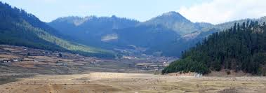
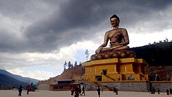
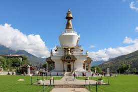
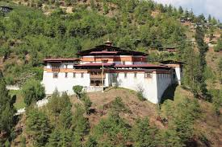

Famous Tourist Places in Bhutan
1.Paro Taktsang

Paro Taktsang, also known as Tiger's Nest Monastery, is a breathtaking and iconic landmark in Bhutan. Perched on a cliff 3,120 meters above sea level, it offers stunning views of the Paro Valley and is a significant religious and cultural site.
2.Phobjikha Valley

Phobjikha is a high-altitude wetland, being located above 3,000 m. It is the wintering ground (late October to early March) for the black-necked crane (Grus nigricollis), a globally threatened species. These cranes return to their breeding place in the Tibetan-Qinghai plateau for the summer.
3.Buddha Dordenma

At a height of 52 metres, Buddha Dordenma is a Buddha statue made of bronze and plated in gold with 125,000 miniature Buddha statues encapsulated inside it.
4.National Memorial Chorten

Built to honour the third king of Bhutan, the National Memorial Chorten is a white structure with a golden finial and four inner sanctums each facing the four cardinal directions.
5.Semtokha Dzong

The oldest Buddhist monastery in Bhutan, Simtokha Dzong was built in 1629 across three storeys with the main sanctum housing a Sakyamuni Buddha statue flanked by eight bodhisattvas.
6.Tashichho Dzong

Housing the throne room of His Majesty the King of Bhutan along with major government departmental offices, the Tashichho Dzong complex also has temples and shrines.
7.Tango Goembha
Belonging to the Drukpa Kagyu School of Buddhism, Tango Goemba displays traditional Bhutanese architecture with a semi-circular outer wall and a main tower with recesses.